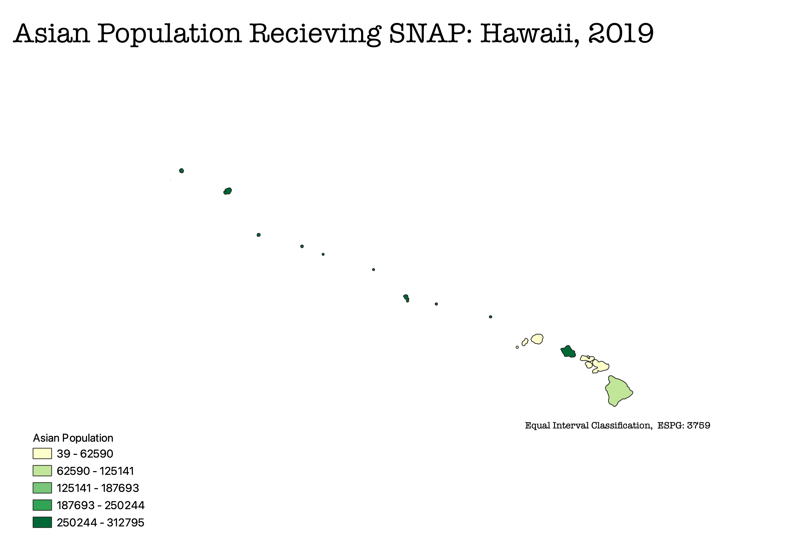

Different Classification Methods for Representing Ethnicity and SNAP Benefits
Aislynn Grantz
I created these maps using the ratio of the number of children ages 3-4 enrolled in preschool out of the total population aged 3-4 per county. I used the total population of children ages 3-4, instead of the entire county population, to get an accurate representation of school enrollment rates. The percent of the entire population enrolled in preschool would not show any significant findings.
Method 1: Pretty Breaks Classification
Using pretty breaks classification is useful for presenting aesthetically pleasing, easily readable, and evenly distributed data. A limitation of using this classification is when dealing with skewed or data heavily clustered because the data might not fall into all classes.
Method 2: Equal Interval Classification
The equal interval method is the easiest classification to read. The intervals are the same size, so the legend is easy to follow. Issues arise when there are outliers; they can make the data look skewed by adjusting the break points and size of the intervals.

Method 3: Equal Count (Quantile) Classification
The natural breaks method allows for the best view of the data distribution. This method is ideal for unevenly distributed data. It accounts for outliers, so it does not create the illusion of skewed data. It is difficult to compare natural break maps from different data sets because the intervals are unique to each data set.